library(tidyverse)
library(lterdatasampler)
# use color palettes
# if using paletteer:
library(paletteer)
# if not, insert color palette package here
# use theme packages to change plot aesthetics
# insert theme package here
library(ggthemes)
library(tvthemes)
library(ggpomological)
# highlight figure components
library(gghighlight)
# put multiple figures together
library(patchwork)
# make figures into gifs
library(gganimate)
# insert images into plots
library(ggimage)
# make figures interactive
library(plotly)1. Summary
Packages
tidyverse
lterdatasampler
paletteer
ggthemes
tvthemes
ggpomological
gghighlight
patchwork
gganimate
ggimage
plotly
Operations
New functions
- use color palettes with
paletteer::paletteer_c()andpaletteer::paletteer_d()
- use themes from
tvthemes(amongst other packages)
- highlight elements using
gghighlight()
- make figures into gifs using
gganimate::transition_reveal()
- insert images into figures using
ggimage::geom_image()
- make figures interactive using
plotly::ggplotly()
Review
Data sources
These are all datasets from the lterdatasampler package.
2. Code
1. Set up
Run this to see datasets from lterdatasampler in your environment:
data("knz_bison")
data("ntl_icecover")
data("and_vertebrates")2. Starter figures:
a. Konza Prairie Bison weights
# cleaned data frame ----
knz_bison_clean <- knz_bison %>% # start with knz_bison data frame
mutate(age = rec_year - animal_yob) %>% # calculate age of bison when weighed
filter(animal_code %in% c("Y-233", "Y-245", "Y-246", "Y-248", "Y-258", "Y-264")) # filter for 6 individual bison
# creating a plot ----
knz_bison_plot <- ggplot(knz_bison_clean, # data
aes(x = age, # x-axis
y = animal_weight)) + # y-axis
# geoms: points for each age, lines connecting age
geom_point(aes(color = animal_code)) +
geom_line(aes(color = animal_code,
group = animal_code)) +
# plot appearance
scale_x_continuous(breaks = seq(from = 0, to = 18, by = 1)) + # line breaks for each age in years
labs(x = "Age (years)",
y = "Weight (lbs)",
color = "Individual",
title = "Bison weigh more as adults than calves")
# displaying the plot
knz_bison_plot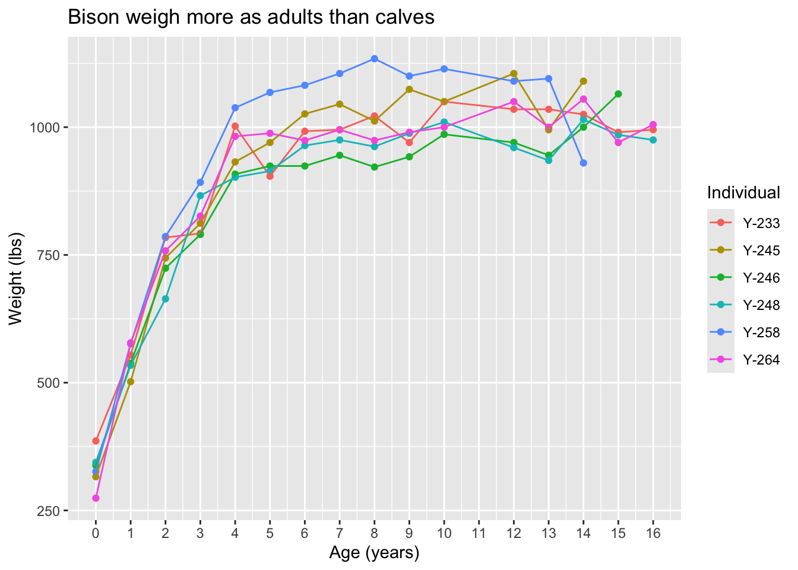
b. North Temperate Lakes ice cover
# creating a plot ----
ntl_ice_plot <- ggplot(data = ntl_icecover, # data
aes(x = year, # x-axis
y = ice_duration, # y-axis
color = lakeid)) + # color by lake
# geometry: line
geom_line(aes(group = lakeid), # making sure line is grouped by lake
linewidth = 1) + # thicker line
# plot appearance
labs(x = "Year",
y = "Ice duration (days)",
title = "Yearly ice duration has declined through time")
ntl_ice_plot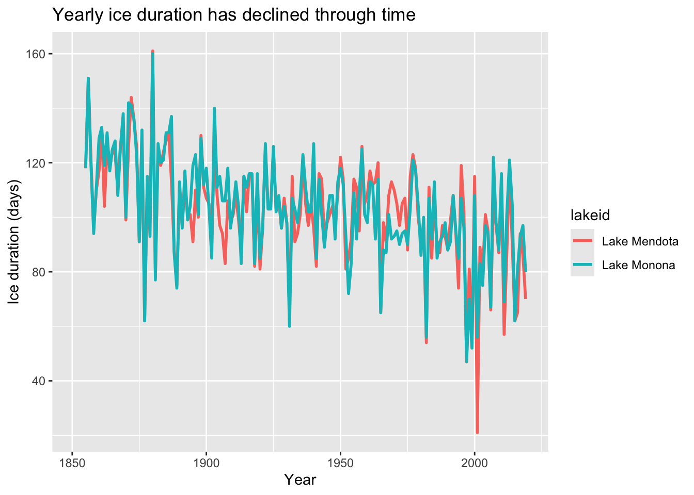
c. Andrews Forest vertebrate species
Figure of length on the x-axis, weight on the y-axis, points representing species observations
# cleaned data frame ----
and_clean <- and_vertebrates %>% # start with and_vertebrates
filter(species %in% c("Cutthroat trout")) %>% # filter for salamanders and trout
mutate(unittype = case_when(
unittype == "C" ~ "Cascade",
unittype == "P" ~ "Pool",
unittype == "SC" ~ "Side channel",
unittype == "IP" ~ "Isolated pools",
unittype == "R" ~ "Rapid"
),
unittype = fct_relevel(unittype, "Pool", "Cascade", "Rapid", "Side channel", "Isolated pools")) %>%
drop_na(unittype)
# creating a plot ----
and_verts_plot <- ggplot(data = and_clean, # use the clean data frame
aes(x = unittype, # x-axis
y = length_1_mm, # y-axis
color = unittype)) + # color the points by species
# drawing points
geom_boxplot(outliers = FALSE) +
geom_jitter(width = 0.2,
height = 0,
alpha = 0.05,
shape = 21) +
# plot appearance
labs(x = "Habitat type",
y = "Weight (g)",
title = "Cutthroat trout in pools are larger than in other habitats")
# displaying the plot ----
and_verts_plot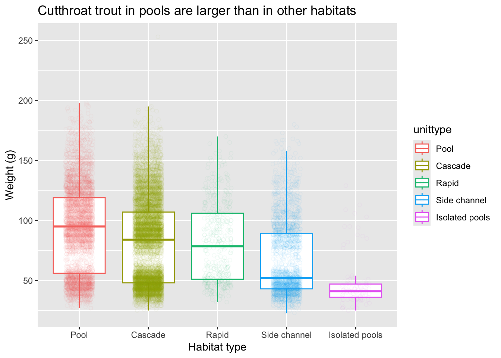
3. Advanced figures
a. quick fixes to make your plot better
ntl_ice_quick <- ntl_ice_plot +
scale_color_manual(values = c("Lake Mendota" = "#6aa84f",
"Lake Monona" = "#45818e")) +
theme_minimal() +
theme(text = element_text(size = 16,
family = "Times New Roman"),
axis.text = element_text(color = "#5b5b5b"),
axis.title = element_text(color = "#5b5b5b"),
plot.title = element_text(color = "#5b5b5b"),
legend.position = "bottom",
legend.title = element_blank())
ntl_ice_quick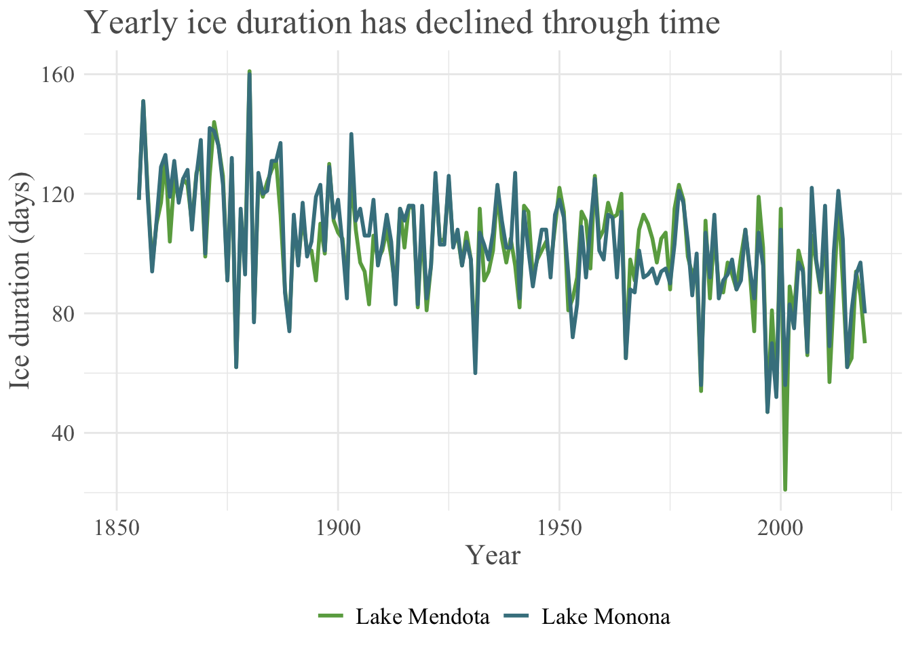
# run this to save your plot!
# ggsave("ntl_ice_quick.png", # what you want your plot file to be called
# ntl_ice_quick, # plot object name
# width = 12, # width (change this if necessary)
# height = 8, # height (change this if necessary)
# units = cm, # units of width and height
# dpi = 300) # resolution b. use color palettes
and_verts_palette <- and_verts_plot +
scale_color_manual(values = paletteer_d("peRReo::buenavista"))
and_verts_palette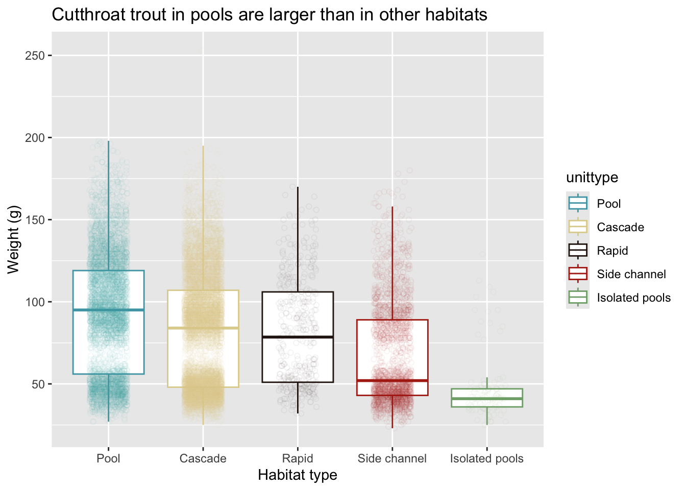
# run this to save your plot!
# ggsave("and_verts_palette.png", # what you want your plot file to be called
# and_verts_palette, # plot object name
# width = 10, # width (change this if necessary)
# height = 8, # height (change this if necessary)
# units = cm, # units of width and height
# dpi = 300) # resolution c. use theme packages to change plot aesthetics
knz_bison_theme <- knz_bison_plot +
theme_economist() +
scale_color_economist()
knz_bison_theme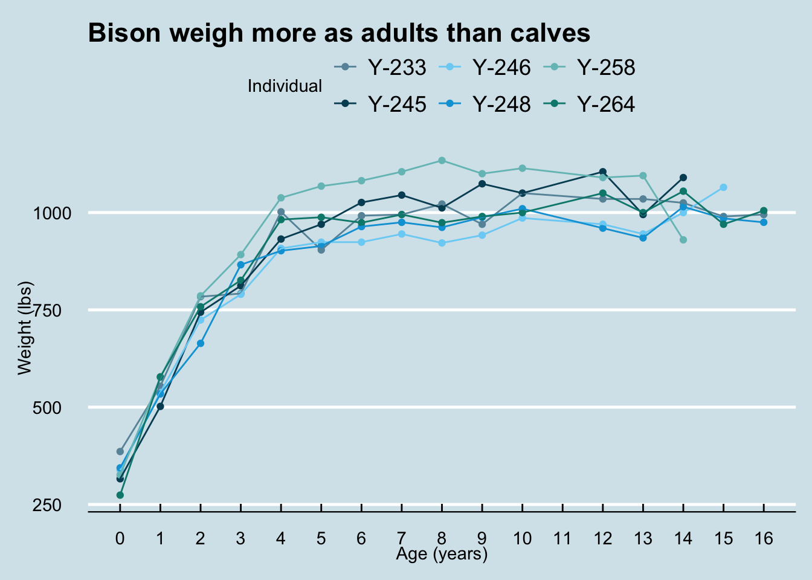
# note that you have to install the "Homemade Apple" font before running this code
# download it here: https://fonts.google.com/share?selection.family=Homemade+Apple
knz_bison_pomological_theme <- knz_bison_plot +
scale_color_pomological() +
theme_pomological_fancy()
knz_bison_pomological_theme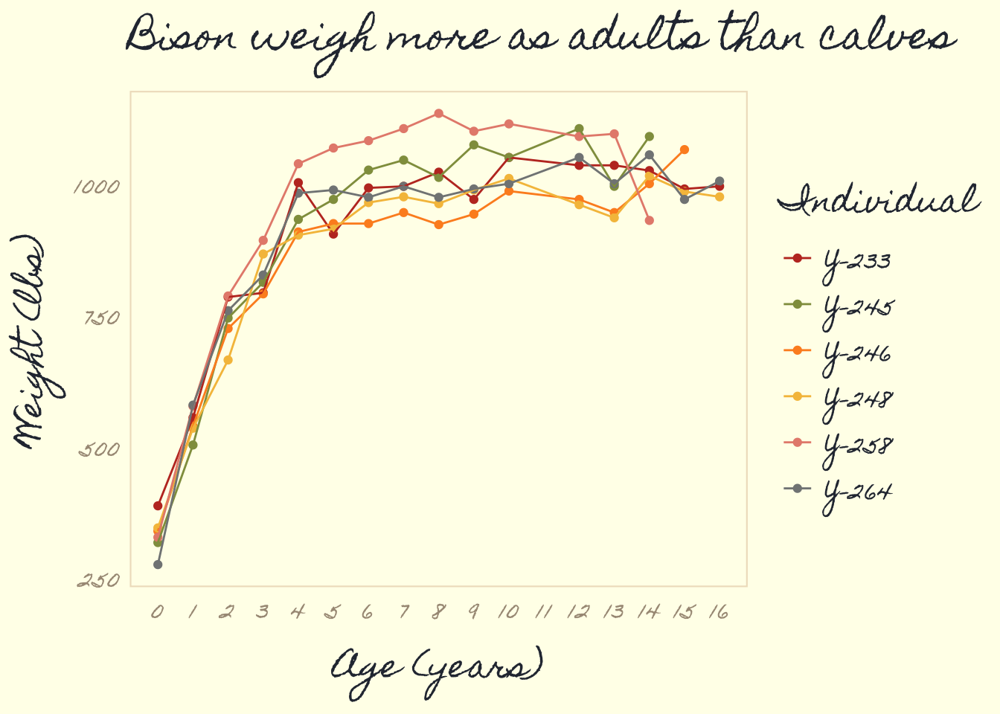
# note that you have to install the "Slayer" font before running this code
# download it here: https://github.com/Ryo-N7/tvthemes/tree/master/inst/fonts/Slayer
# click through to the font, then hit the download button
knz_bison_avatar_theme <- knz_bison_plot +
scale_color_avatar(palette = "WaterTribe") +
theme_avatar(title.font = "Slayer",
text.font = "Slayer",
title.size = 8,
subtitle.size = 8)
knz_bison_avatar_theme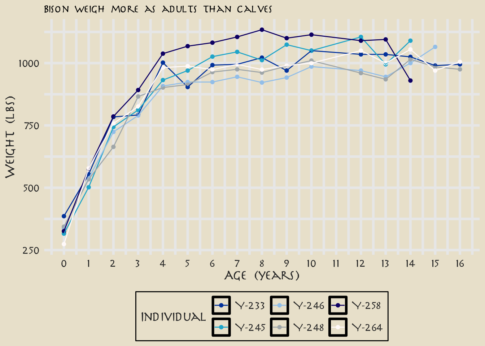
# run this to save your plot!
# ggsave("knz_bison_theme.png", # what you want your plot file to be called
# knz_bison_theme, # plot object name
# width = 10, # width (change this if necessary)
# height = 8, # height (change this if necessary)
# units = cm, # units of width and height
# dpi = 300) # resolution d. highlight figure components
knz_bison_highlight <- knz_bison_plot +
gghighlight(animal_code == "Y-233",
unhighlighted_params = list(alpha = 0.8),
line_label_type = "ggrepel_label")
knz_bison_highlight 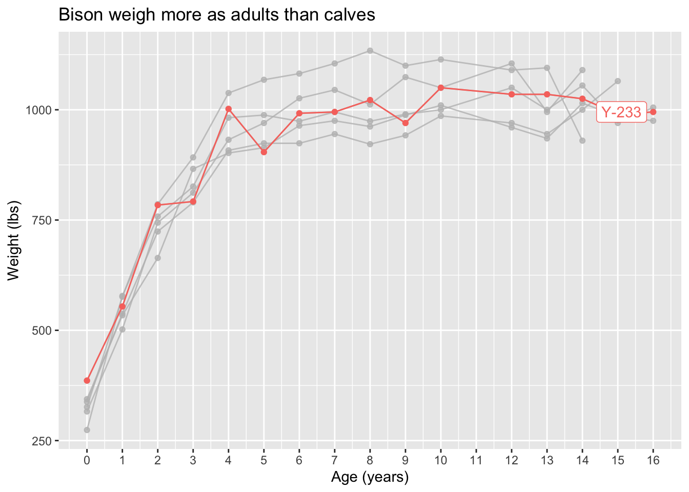
# run this to save your plot!
# ggsave("knz_bison_highlight.png", # what you want your plot file to be called
# knz_bison_highlight, # plot object name
# width = 10, # width (change this if necessary)
# height = 8, # height (change this if necessary)
# units = cm, # units of width and height
# dpi = 300) # resolution e. put multiple figures together
plots_together <- ntl_ice_plot / knz_bison_plot
plots_together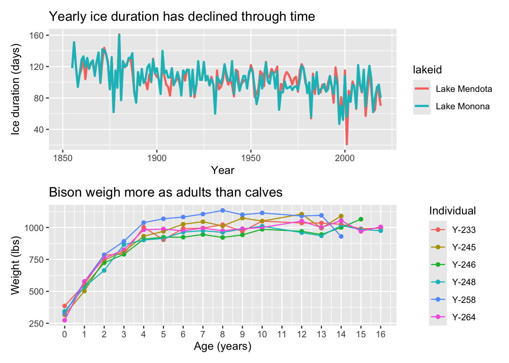
# run this to save your plot!
# ggsave("plots_together.png", # what you want your plot file to be called
# plots_together, # plot object name
# width = 12, # width (change this if necessary)
# height = 10, # height (change this if necessary)
# units = cm, # units of width and height
# dpi = 300) # resolution f. make figures into gifs
ntl_ice_gif <- ntl_ice_plot +
transition_reveal(along = year) +
ease_aes('linear')
ntl_ice_gif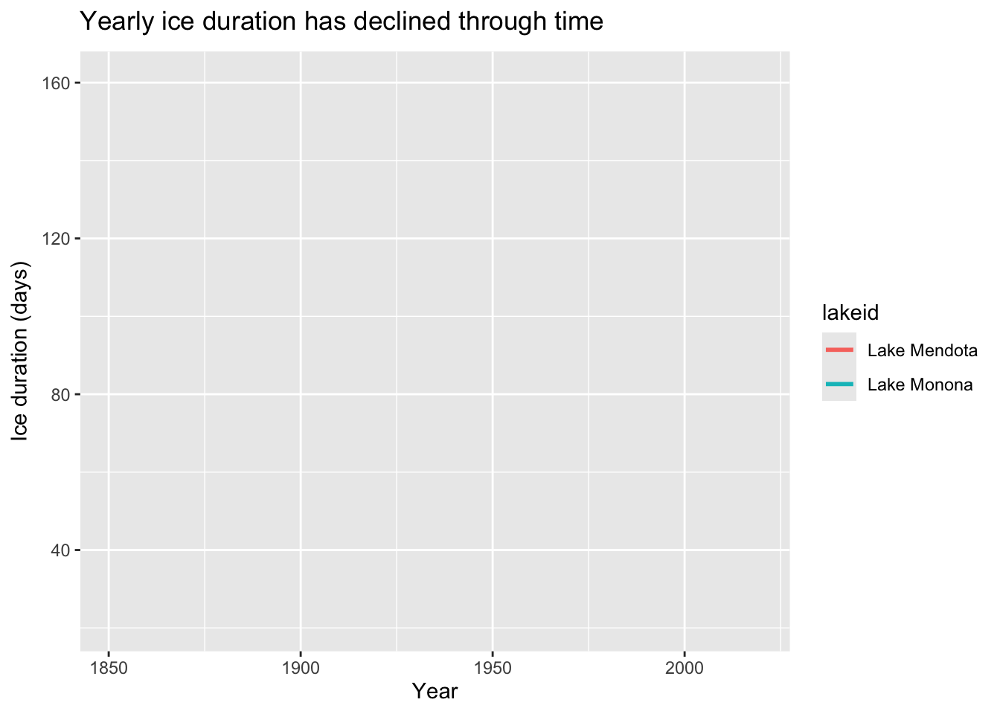
# run this to save your gif!
# anim_save("ntl_ice.gif",
# ntl_ice_gif)g. insert images into plots
Note: if you go with this option, you can use the bison image in this directory with the knz_bison_plot. You can also use a different plot and download another image that makes sense. Up to you!
knz_bison_image <- knz_bison_plot +
geom_image(
data = tibble(age = 10, animal_weight = 500),
aes(image = "bison-on-konza.jpg"),
size = 0.5
)
knz_bison_image
# run this to save your plot!
# ggsave("knz_bison_image.png", # what you want your plot file to be called
# knz_bison_image, # plot object name
# width = 10, # width (change this if necessary)
# height = 8, # height (change this if necessary)
# units = cm, # units of width and height
# dpi = 300) # resolution knz_bison_image <- knz_bison_plot +
geom_image(
data = tibble(age = 10, animal_weight = 500),
aes(image = here::here("workshop", "images", "bison-on-konza.jpg")),
size = 0.5
)
knz_bison_image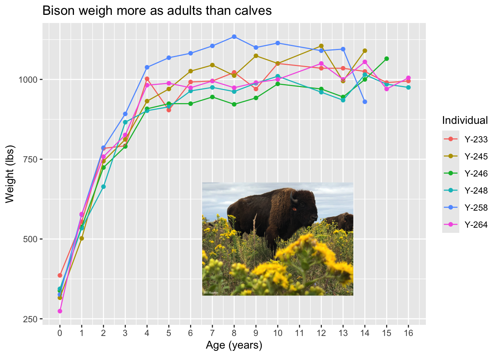
# run this to save your plot!
# ggsave("knz_bison_image.png", # what you want your plot file to be called
# knz_bison_image, # plot object name
# width = 10, # width (change this if necessary)
# height = 8, # height (change this if necessary)
# units = cm, # units of width and height
# dpi = 300) # resolution h. make figures interactive
ntl_ice_inter <- ggplotly(ntl_ice_plot)
ntl_ice_inter# run this to save your object!
# htmltools::save_html(ntl_ice_inter,
# "ntl_ice_inter.html")